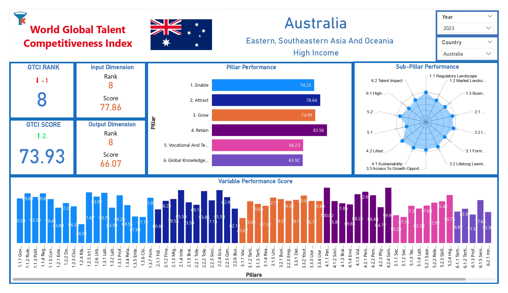
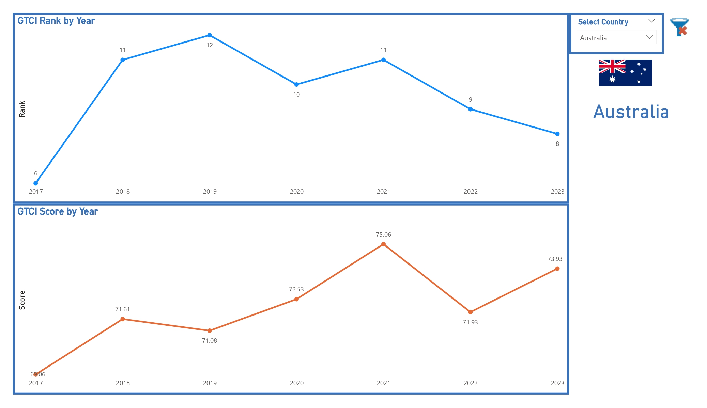
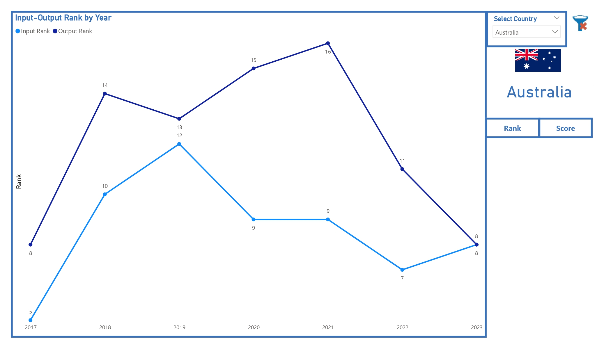
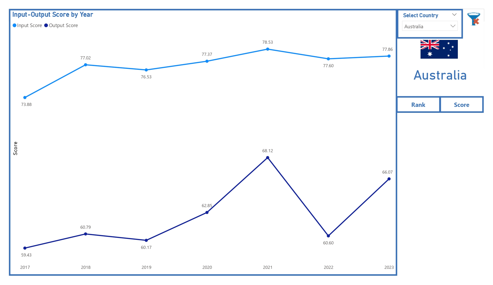
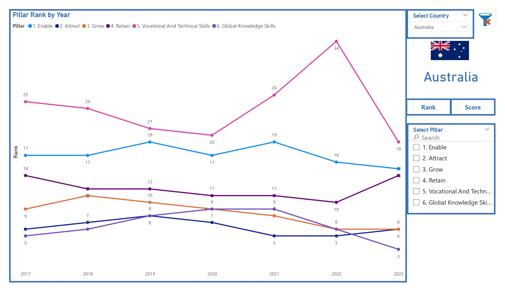
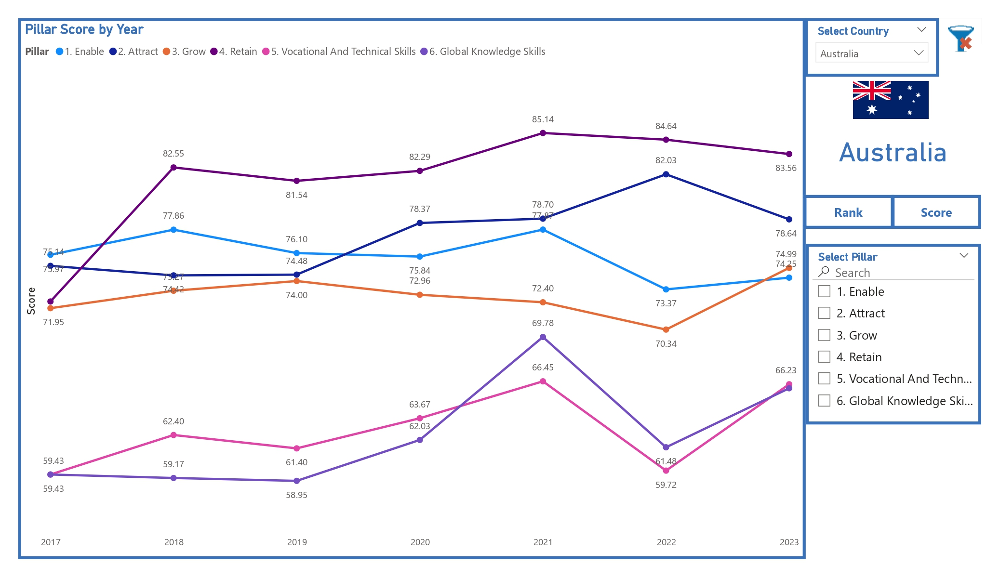

Persistent Brain Drain
Countries continued losing highly skilled workers to other regions despite substantial public investment in local education and talent development.
Transformed the Global Talent Competitiveness Index into an interactive Power BI decision-support platform that helps policymakers, economists, HR leaders, and researchers compare how countries enable, attract, grow, retain, and convert talent into economic outcomes.
National governments and policy leaders lacked a unified, multi-dimensional framework for understanding why highly skilled workers leave despite major investments in education.
Countries continued losing highly skilled workers to other regions despite substantial public investment in local education and talent development.
Leadership teams relied on anecdotal evidence because no standardized framework existed to audit national talent competitiveness across multiple dimensions.
Governments could overinvest in universities while overlooking weaknesses in regulation, openness, sustainability, or quality of life that were actually driving talent away.
A comprehensive Power BI analytics suite was created to convert the complex global index into an accessible, low-latency policy intelligence platform.
Ingested, standardized, and transformed the global index dataset into a clean analytical structure.
Built a consolidated model designed for fast country, year, pillar, sub-pillar, and variable-level analysis.
Calculated overall scores, rankings, KPIs, and flexible country-level comparison metrics across economic layers.
Measured Enable, Attract, Grow, Retain, Vocational & Technical Skills, and Global Knowledge Skills.
Compared national talent conditions with actual productivity and knowledge outcomes to reveal conversion efficiency.
Used Radar Charts, Dual-Axis Bar Charts, and Decomposition Trees to isolate local policy vulnerabilities.
Enabled dynamic filtering by country and year across a structured multi-page reporting experience.
Replaced localized, anecdotal decision-making with a standardized and interactive global benchmarking platform spanning multiple countries and talent-performance dimensions.
Automated comparison of national talent inputs against productivity outputs, revealing countries that fail to realize returns on educational and workforce investments.
Allowed policymakers, economists, and HR networks to identify specific lagging pillars and shift from generic spending to focused, evidence-based interventions.
Note: The supplied case study document contains qualitative strategic impact rather than quantified financial or percentage outcomes, so no unsupported metrics have been added.
A structured analytical architecture connecting complex global talent indicators to accessible policy intelligence.
Country, year, pillar, sub-pillar, and variable data
Power Query cleans and standardizes the dataset
Star schema structures analytical relationships
DAX generates scores, rankings, and KPIs
Interactive benchmarking and policy dashboards
The delivery flow transforms complex global index data into clear country comparisons and targeted policy insights.






Replace this placeholder with the public Power BI embed URL after publishing the report.
The repository contains project documentation, dashboard screenshots, analytical implementation details, and supporting assets.
Discover more enterprise data transformation and analytics projects.